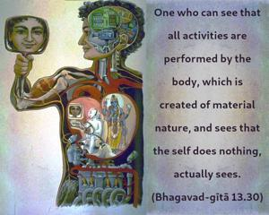
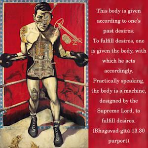

One who can see that all activities are performed by the body, which is created of material nature, and sees that the self does nothing, actually sees.


This body is made by material nature under the direction of the Supersoul, and whatever activities are going on in respect to one’s body are not his doing. Whatever one is supposed to do, either for happiness or for distress, one is forced to do because of the bodily constitution. The self, however, is outside all these bodily activities. This body is given according to one’s past desires. To fulfill desires, one is given the body, with which he acts accordingly. Practically speaking, the body is a machine, designed by the Supreme Lord, to fulfill desires. Because of desires, one is put into difficult circumstances to suffer or to enjoy. This transcendental vision of the living entity, when developed, makes one separate from bodily activities. One who has such a vision is an actual seer.